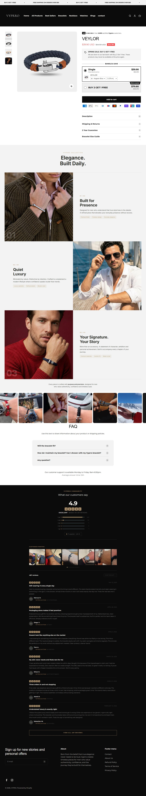
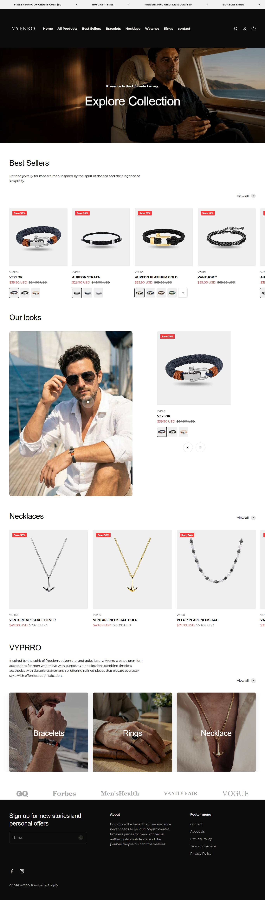
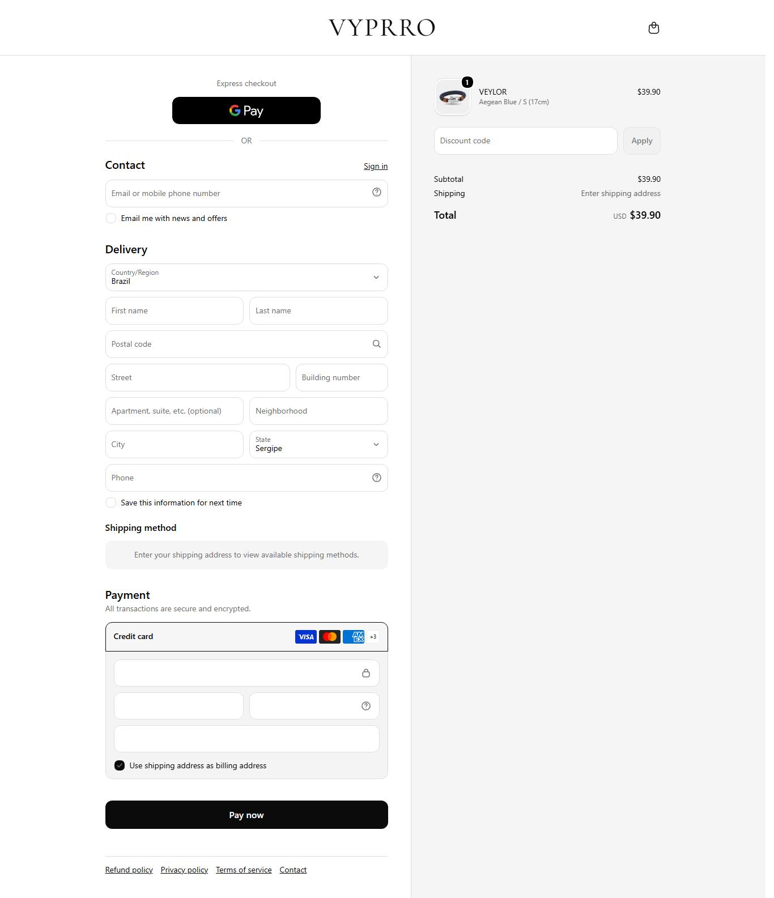

vyprro.com · joia masculina "quiet luxury" · BRL/USD

Fonte: coleção de best sellers da própria loja.
Mediana do catálogo: $39,90 · faixa $29,00 a $139,99 (relógios no topo)
| # | Produto | Preço |
|---|---|---|
| 1 | VEYLOR Bracelet | $39,90 |
| 2 | AUREON STRATA | $29,90 |
| 3 | AUREON PLATINUM GOLD | $33,90 |
| 4 | VANTHOR™ | $59,00 |
| 5 | AURYON MARINER | $39,90 |
| 6 | VYRO ECLIPSE | $89,00 |
| 7 | NOCTIS RING GOLD | $54,00 |
| 8 | Imperial Gold Watch | $119,99 |


| Dado | Motivo | Método tentado |
|---|---|---|
| Tráfego real | abaixo do piso do SimilarWeb público | trafego.js (Playwright), 1 tentativa, retorno explícito "sem dados" (não bloqueio) |
| Reviews | nenhuma contagem pública no HTML | Judge.me/JSON-LD via reviews.py — loja não expõe aggregateRating |
| Idade real do domínio | sem registro no Wayback | Wayback CDX — domínio novo demais para ter sido arquivado |
FORA DO ESCOPO do gate de concorrentes — esta ficha é a loja de referência do mentorado, não uma oportunidade a classificar em MODELAR/OBSERVAR/IGNORAR. Os blocos de mídia paga, benchmark e scorecard não se aplicam aqui pelo mesmo motivo.
A Vyprro tem catálogo largo (60 produtos, 4 categorias), fotografia consistente e um posicionamento verbal claro ("quiet luxury", "move with purpose") — mas isso ainda não virou anúncio pago testado. O crescimento de 11 mil seguidores em ~1 mês de catálogo sugere tração orgânica real (ou aporte de mídia fora da Ad Library, ex. influenciador/TikTok), o que é positivo, mas deixa a pergunta central em aberto: o produto converte quando alguém chega frio, pago, sem contexto de marca? É exatamente isso que os concorrentes qualificados neste raio-x (Storeedyta acima de tudo) já testaram e validaram. O Plano de Ação usa o padrão deles como blueprint pra essa próxima etapa.